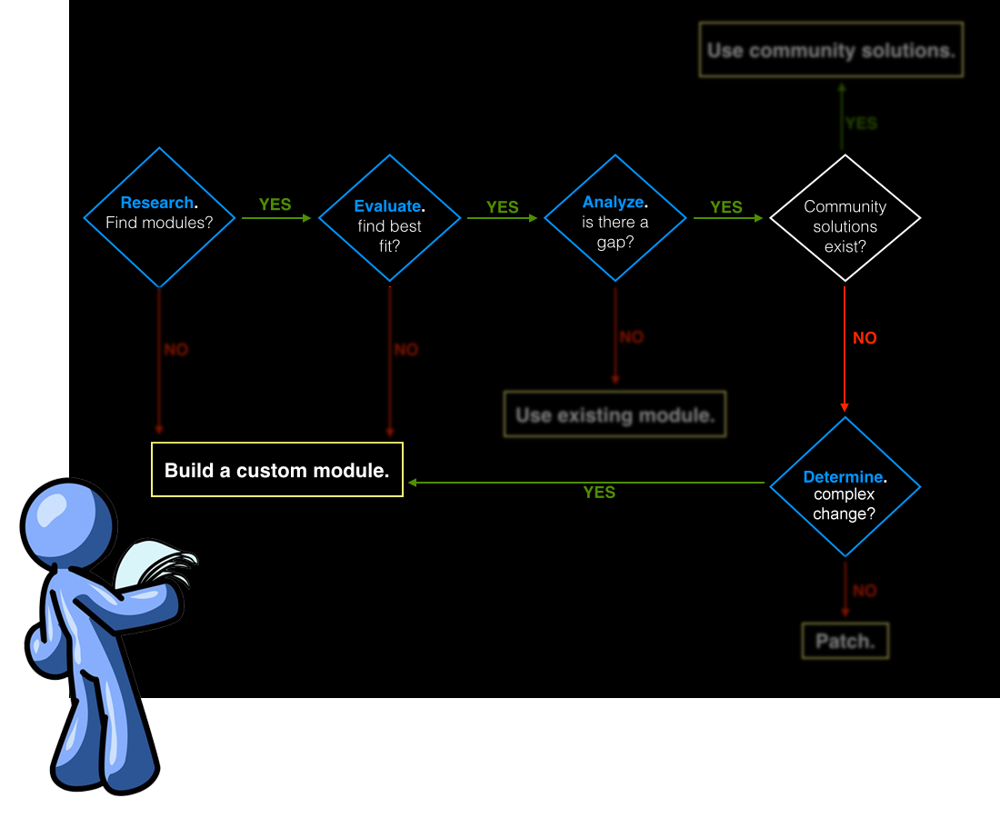

#badcamp
@WeAreGenuine
R.E.A.D /
Michael Miles
R.E.A.D
How to Select the Right Modules
2015.badcamp.net/node/169
Badcamp 2015
#badcamp
Michael Miles
From: Boston, MA USA
Work: Genuine @WeAreGenuine(.com)
Exp: Working with Drupal since 2008.
Acquia Grand Master. 2014 Acquia MVP.
Twitter: @mikemiles86
Drupal.org: mikemiles86
All the Places: mikemiles86
mike-miles.com
Goals of this Session
- Outline steps to decide between contrib, patched or custom module.
- Demonstrate the effectiveness of R.E.A.D
- Teach great habits for making module selections
What it is all About
How to make smart, timely and informed decisions.
Why this is Important

All projects are subject to these three constraints. Need to be able to quickly and correctly make the right decisions for how to build functionality.
R.E.A.D
- Research what exists
- Evaluate the options
- Analyze the gaps
- Determine changes
Badcamp presents
A Real World Scenario
Produced by Mike Miles
Starring
A Drupalist

Everyones favorite hero. Will see him go through the 4 steps of R.E.A.D to make a decision on how to build the required functionality.
Research What Exists
How and where to find modules to meet your needs.
Isolate Functionality Keywords
- Gather all documentation, specs, notes, etc...
- Ask questions about any assumptions
- Highlight, circle, mark unique nouns and verbs
Perform Searches
- 30K+ modules on Drupal.org
- Favorite Search Engine, "Drupal [keywords]"
- Drupal.org, "[keywords]"
Utilize the Community
- Ask for help on IRC: #drupal, #drupal-support
- Find Drupal group on favorite social network(s)
- Talk offline at meetups, camps and cons.
Act 1: Research What Exists

Act 1, Scene 1: Isolate Keywords
WHEN saving a file entity
AND it is a jpeg image
THEN the exif meta data needs to be captured
AND mapped to custom fields
AND these mappings need to be exportable using features
Compiling information about his requirements, our Drupalist highlights the terms he thinks are important, terms that he can search for modules with.
Act 1, Scene 2: Perform Searches

Drupalists takes the keyowrd "Exif" and performs a Google search. Immediatly has a list of potential modules to use.
Act 1, Scene 3: Utilize the Community
| » The topic for #drupal is: #drupal is for general chitchat, quick questions, and community talk | |
| drupalist | Does anyone know how to capture exif data from jpeg images? |
| typhonius | drupalist: Running it through Imagick would probably get you exif. |
| chargingHawk | drupalist: What are you trying to do with the exif data? |
| drupalist | chargingHawk: When a user is uploading a jpeg I need to map the exif data to some custom fields. |
| chargingHawk | drupalist: Are you using File Entities? or just an image upload field? |
| peebz is now known as afk_peebz | |
| chargingHawk | Because Exif Custom might do what you are looking for |
| chargingHawk | Exif Custom? |
| Druplicon | Exif Custom module allows automatic population of fields from the EXIF, XMP and IPTC metadata tags. http://drupal.org/project/exif_custom |
| woogman | masher: Did you ever write that migrate class? |
| drupalist | chargingHawk: I am using File Entities. Exif Custom sounds like it does what I might need. Thanks! |
| drupalist | chargingHawk++ |
| | | |
Our Drupalist signs onto the #drupal IRC channel and talks to the community for help. Community offers a potential module.
Evaluate the Options
Using metrics to determine the best fit.
Gain General Understanding
- Read the description and linked documentation
- Answer "What does it do and not do?"
- Answer "What does it depend on?"
Community Adoption
- Downloads vs. Installs vs. Age
- Activity of the issue queue
- Issues and bugs are good! (to a point)
Maintainer Activity
- Regularity of commits and releases
- Participation in the issue queue
- Acceptence of feedback
Act 2: Evaluate the Options

Our Drupalists takes a potential option "Exif Custom" and evaluates it.
Act 2, Scene 1: Gain General Understanding

Drupalists reads the description and quickly knows what the module does and what it depends on. Describes much of the functonality he is looking for.
Act 2, Scene 2: Community Adoption

Sees that it has not been downloaded or installed much. But it is a specific use case. Issue queue seems to have some activity.
Act 2, Scene 3: Maintainer Activity

From issue queue, Drupalist sees that maintainer participates. Also notices that maintainer seems active and releases updates.
Analyze the Gaps
Understanding what it does vs. what you need it to do.
Test the Module
- Download into a sandbox (simplytest.me)
- Discover what is offered out of the box
- How does it meet your needs
Discover Missing Functionality
- What does the module not do?
- Missing 20%? Missing 80%?
- Bigger the gap = larger amount of effort
Check for Community Solutions
- Look at the issue queue
- Search "Drupal [module] [functionality]"
- Close gaps with community help
Act 3: Analyze the Gaps

Drupalist has evaluated "Exif Custom" to be a best fit. Needs to see what gaps it may have.
Act 2, Scene 1: Test the Module

Downloads to local environment and can quickly setup and map exif data to fields
Act 2, Scene 2: Discover Missing Functionality

Discovers that there is not Features support, so mappings cannot be exported to other environments.
Act 2, Scene 3: Check for Community Solutions

Drupalist turns back to the issue queue, to see if the general use case of Features has been solved. Is not able to find a solution to the gap.
Determine Changes
What is needed to close any gaps.
Review the Code
- Does it follow standards?
- Is it extendable with APIs & hooks?
- Understand how functionality works?
Evaluate Changes
- How much code needs to be changed?
- Would changes extend?
- Would changes alter?
Estimate Effort
- How complex are the changes?
- How confident in ability to make changes?
- Is there enough time to make changes?
Act 4: Determine Change

After discovering the gap of Features support. Drupalist needs to determine how much would have to change.
Act 4, Scene 1: Review the Code
<?php
//...
function exif_custom_get_mapping(){
//First try and get users default
$mid = exif_custom_get_user_default();
//Else use site default or item 0
if($mid === FALSE){
$mid = exif_custom_get_mid(variable_get('exif_custom_default', ''));
}
$sql = "SELECT * FROM {exif_custom_mapped_fields} WHERE mid = :mid AND img_field != 'none'";
$return = db_query($sql, array(
':mid' => $mid
))->fetchAllAssoc('img_field');
return $return;
}
function exif_custom_mappings(){
$output = '';
$mappings = _exif_custom_get_maps();
if($mappings == false){
$output .= '<p>You have not yet created any mappings.';
} else {
$site_default_mid = exif_custom_get_mid(variable_get('exif_custom_default', ''));
$output .= '<table>';
// ...
Drupalist notes that code follows standards. He can read and understand what functions he'd need to use to build in Features support.
Act 4, Scene 2: Evaluate Changes
Have to add Features support
Requires adding machine_names
would be extending the module
Drupalist qeustions what changes he'd need to make to implement Features support.
Act 4, Scene 3: Estimate Effort
Changes to module are minimal
Lots of Features documentation, confident can add code
Will not take a lot of time.
Drupalist determines changes are minimal as is the effrort. He has enough skill and time to make the needed changes.
Making The Choice
What to do with all the data
Potential Solutions
- Use a contrib module
- Use a contrib module with community solution
- Patch a contrib module
- Build a custom module
Go with the Flow

R.E.A.D is a flow you can follow to reach the right solutions. Each step is ultimetly a question.
Solution Percentages

In general most likely will use a contrib module with or without community solutions or your own patch. Very rarely will you need to write a custom module.
Act 5: Making The Choice

Act 5, Scene 1: Go with the Flow
Going through each steps and asking himself the questions our Drupalists decides that the correct path is to use Exif Custom and patch in Features support.
Act 5, Scene 2: Solution

Being a good member of the community, the Drupalists provides his Features patch back to the module. The active maintainer sees the benefit and merges it in.
R.E.A.D
- Research what exists
- Evaluate the options
- Analyze the gaps
- Determine changes
Slides & Notes
Thank You!
Feedback
@mikemiles86
#badcamp
Questions?